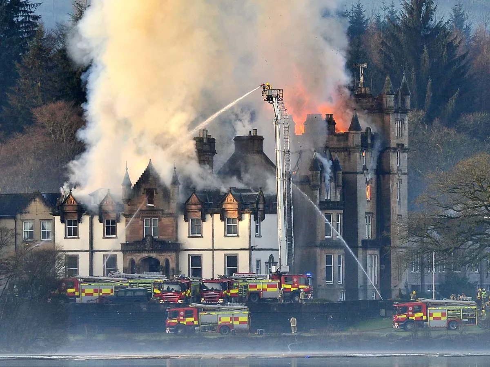

Letting It All Out
1 September 2025, 4:20:69pm

On Sunday 31 August 2025, the events venue a few miles north of
Balloch, upon Loch Lomond, named Why Would You Book This One When
Cameron House Is Just Across The Loch House Hotel experienced the
wrath of a man and his family sleeper sport-wagon estate on a
romantic mission to prevent one of the mistakes of the decade. At
approximately 1:59:59pm, the 69-year-old, Durness-native,
Munro'ing legend, son-half of the iconic 80's and 00's nostalgia
father-son DJ duo DeckAid, European Hostel God, Lewis "Britton"
Britton drove his 2008, on a '58 plate, Audi A6 C6 DI Allroad 4.2
naturally aspirated FSI V8 6-speed Tiptronic Quattro, with Bose
6.1 surround sound audio, at high speed through the grounds, the
gardens, and eventually the walls and most ground floor rooms of
Why Would You Book This One When Cameron House Is Just Across The
Loch House Hotel. We suspect this was born from Britton's
intention to prevent the bride, 34 year-old (prime) also
Durness-native, Munro babe, hot mommy,
name-should-end-with-"y"-but-ends-with-"ie" (üòè), Scrummie Mummy,
from making the greatest mistake of her life.
The image to the right was snapped by Britton's right hand man and
support gorilla on the day of this attack: Craig "C. Vim Griffin"
Griffin. It shows Britton, in his Bavaria-worthy fine silver fox
state, just seconds before he broke the shackles of the grounds
and plowed through the internals of the venue. Some subtle
metaphorical foreshadowing, perhaps. It is actually believed that
the original intention was for the gentlemen to take point on Ben
Lomond and assassinate the groom via long-range rifle methods.
However, the gentlemen aborted these plans after deducing that the
wind may lead to an Imran Zakhaev sort of situation. Yikes. We've
now learned that Britton's efforts were a success; the only
survivor being the bride, or the bride-no-longer in this case; the
bride freed and returned to her former glory. All other attendees,
including the groom (especially the groom), were either
vegetableized by the raw plowing power of 440 Nm of torque @ 3500
RPM, or burnt to a crisp like the patch of grass beneath K Weeds'
bedroom window, due to the subsequent explosion. Britton and
Scrummie Mummy were spotted just hours later fell running the
Fannich 9, near Ullapool, and returning to Inverness Youth hostel
to get f*cked up and watch 80's videos on the hostel's 57-incher.
It was any given weekend, after all.